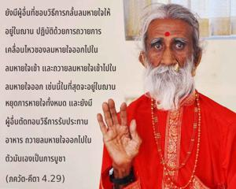
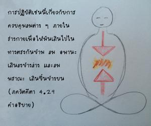
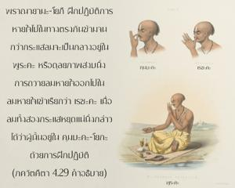
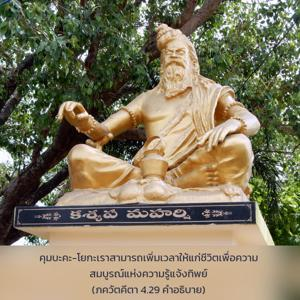

ยังมีผู้อื่นที่ชอบวิธีการกลั้นลมหายใจให้อยู่ในฌาน ปฏิบัติด้วยการถวายการเคลื่อนไหวของลมหายใจออกไปในลมหายใจเข้า และถวายลมหายใจเข้าไปในลมหายใจออก และในที่สุดจะอยู่ในฌาน หยุดการหายใจทั้งหมด และยังมีผู้อื่นตัดทอนวิธีการรับประทานอาหารถวายลมหายใจออกไปในตัวมันเองเป็นการบูชา




ระบบโยคะแห่งการควบคุมขบวนการหายใจนี้เรียกว่า ปฺราณายาม ในตอนต้นฝึกปฏิบัติในระบบ หฐ-โยค ด้วยท่านั่งต่างๆ วิธีการทั้งหมดนี้แนะนำเพื่อให้ควบคุมประสาทสัมผัส และพัฒนาในความรู้แจ้งทิพย์ การปฏิบัติเช่นนี้เกี่ยวกับการควบคุมลมต่างๆ ภายในร่างกายเพื่อให้มันเดินไปในทางตรงกันข้าม ลม อปาน เดินลงข้างล่างและลม ปฺราณ เดินขึ้นข้างบน ปฺราณายาม-โยคี ฝึกปฏิบัติการหายใจไปในทางตรงกันข้าม จนกว่ากระแสลมจะเป็นกลางอยู่ใน ปูรก หรือดุลยภาพสงบนิ่ง การถวายลมหายใจออกไปในลมหายใจเข้าเรียกว่า เรจก เมื่อลมทั้งสองกระแสหยุดแน่นิ่ง กล่าวได้ว่าผู้นั้นอยู่ใน กุมฺภก-โยค ด้วยการฝึกปฏิบัติ กุมฺภก-โยค เราสามารถเพิ่มเวลาให้แก่ชีวิต เพื่อความสมบูรณ์แห่งความรู้แจ้งทิพย์ โยคีผู้มีปัญญาสนใจในการบรรลุความสมบูรณ์ในชาติเดียว โดยไม่ต้องรอชาติหน้าด้วยการฝึกปฏิบัติ กุมฺภก-โยค พวกโยคีสามารถเพิ่มเวลาให้แก่ชีวิตได้หลายต่อหลายปี อย่างไรก็ดี บุคคลในกฺฤษฺณจิตสำนึกสถิตในการปฏิบัติรับใช้ทิพย์ด้วยความรักต่อองค์ภควานฺ และเป็นผู้ควบคุมประสาทสัมผัสได้โดยปริยาย ประสาทสัมผัสของท่านปฏิบัติรับใช้องค์กฺฤษฺณเสมอโดยไม่เปิดโอกาสให้ไปทำอย่างอื่น ดังนั้น ในบั้นปลายของชีวิตจะถูกย้ายไปสู่ระดับทิพย์แห่งองค์กฺฤษฺณโดยธรรมชาติ ด้วยเหตุนี้จึงไม่พยายามต่ออายุ ท่านได้ยกระดับมาถึงจุดหลุดพ้นทันที ดังที่ได้กล่าวไว้ใน ภควัท-คีตา (14.26)
มำ จ โย ’วฺยภิจาเรณ
ภกฺติ-โยเคน เสวเต
ส คุณานฺ สมตีไตฺยตานฺ
พฺรหฺม-ภูยาย กลฺปเต
“ผู้ที่ปฏิบัติการอุทิศตนเสียสละรับใช้องค์ภควานฺด้วยความบริสุทธิ์ใจได้ข้ามพ้นระดับต่างๆของธรรมชาติวัตถุ และพัฒนามาสู่ระดับทิพย์โดยทันที” บุคคลในกฺฤษฺณจิตสำนึกเริ่มต้นจากระดับทิพย์ และจะอยู่ในจิตสำนึกเช่นนี้เสมอ ดังนั้น จึงไม่มีการตกต่ำลง และในที่สุดจะบรรลุถึงอาณาจักรขององค์ภควานฺโดยไม่ล่าช้า การฝึกปฏิบัติตัดทอนการรับประทานอาหารทำไปโดยปริยายเมื่อเรารับประทาน กฺฤษฺณ-ปฺรสาทมฺ หรืออาหารที่ถวายให้องค์ภควานฺก่อนเท่านั้น วิธีการลดอาหารช่วยได้มากในเรื่องของการควบคุมประสาทสัมผัส หากปราศจากการควบคุมประสาทสัมผัสก็เป็นไปไม่ได้ที่จะหลุดออกจากพันธนาการทางวัตถุ